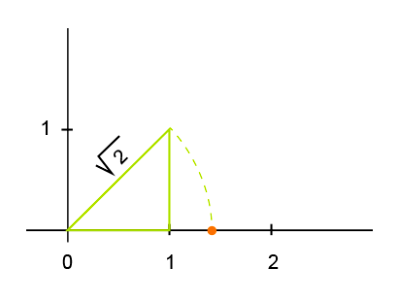

Números Reales
El conjunto de los números reales pertenece en matemáticas a la recta numérica que comprende a los números racionales y a los números irracionales. Esto quiere decir que incluyen a todos los números positivos y negativos, el símbolo cero, y a los números que no pueden ser expresados mediante fracciones de dos enteros que tengan como denominador a números no nulos (excluye al denominador cero).
Un número real puede ser expresado de diferentes maneras, por un lado están los números reales que pueden ser expresados con mucha facilidad, ya que no poseen reglas complejas para hacerlo. Estos son los números enteros y los fraccionarios, como por ejemplo el número 67 que viene a ser un entero, o también el ¾ , que es un número fraccionario compuesto de dos enteros, cuyo numerador es 3 y su denominador es 4. Sin embargo, también existen otros números que pueden ser expresados bajo diferentes reglas matemáticas más complejas como números cuyos decimales son infinitos como el número π o √2 y que sirven para realizar cálculos matemáticos pero no pueden ser representados como un símbolo numérico único

Los números reales se representa con la letra RR, y aparecen por la necesidad de realizar cálculos más complejos ya que en épocas como entre el siglo XVI y el XVII, se hacían necesarias nuevas cifras para los avances tecnológicos que ya no podían ser representados por cifras aproximadas ni por expresiones coloquiales por su inexactitud. El rigor del avance de la humanidad a partir de sus herramientas, hizo necesaria la creación de nuevas expresiones matemáticas que den mayor exactitud a los cálculos
Por lo tanto, el conjunto de los números reales se conformó a partir de otros subconjuntos de números que surgían de necesidades en las matemáticas, como los números negativos y los números fraccionarios y decimales. En Europa, cuna de la ciencia en la modernidad, los números negativos no fueron utilizados hasta ya avanzado el siglo XVII, sin embargo, ya habían sido pensados muchos siglos atrás por culturas como la china y la hindú. Incluso se llegaba a descartar las soluciones de cálculos que tenían resultado negativo, por ser considerados números irreales.
Los números fraccionarios por su parte, fueron utilizados por los egipcios para la resolución de diferentes problemas. Pero es en la cultura griega de donde se extrae el actual uso de los racionales, de raciones de números, ya que los utilizaban para definir el espacio entre las notas musicales con relaciones de armonía que correspondían a divisiones en las melodías del sonido. Así se empezó a ver fracciones en otras cosas y sustancias.
A partir de allí, la complejidad de los cálculos empieza a profundizarse y es hasta el teorema de Pitágoras que surgen los números irracionales de los que se hablaba, donde los decimales de la fracción son infinitos y por lo tanto no son expresables en números únicos. De aquí nace el, quizás, primer número irracional que se conoce. A partir del teorema planteado como la constante pitagórica, cuya cifra surge de la longitud de la hipotenusa de un triángulo rectángulo cuya longitud de cada uno de sus catetos es 1, la cifra obtenida es √2
Entonces, el concepto de números reales es que son los números que pueden ser expresados con decimales, incluyendo a aquellos que tienen decimales en infinita expansión. Esto se debe a que en la lógica de los números reales, no hay números exactos. Es decir, la exactitud de un resultado está marcado por la expansión infinita de los decimales de un número, cuyo mejor ejemplo es π, y paradójicamente, este no es un número exacto, ya que proviene de la división de la circunferencia para el diámetro de un círculo perfecto. Aclarando mejor con otro ejemplo, es la división de 10÷3 cuya respuesta es 3,333333333333333...
Sistema de Números Reales
El sistema de números reales se compone principalmente de dos grandes conjuntos, el de los números racionales que son aquellos que pueden ser expresados como la división de dos números enteros como 3/4, 1/5, incluso un número entero puede ser expresado como una fracción, ya que el número entero puede ser dividido para 1 sin cambiar su esencia, por ejemplo el número 8 puede ser expresado en fracción así 8/1; mientras que el otro gran conjunto del sistema de números reales es el de los números irracionales cuya representación decimal es expansiva, infinita y aperiódica.
Los números irracionales son un conjunto en sí mismos pero, a su vez, los números racionales tienen subconjuntos que son: las fracciones no enteras con sus respectivas notaciones negativas; los números enteros; dentro de los números enteros están los negativos y los enteros positivos; estos últimos a su vez incluyen a los números naturales y al cero. Para aclarar esta conjunción, se puede graficar como en el diagrama de arriba
De otra forma, se muestra a continuación un mapa conceptual de números reales
Representación De Números Reales
En la recta numérica, la representación de números reales se puede hacer con una exactitud aproximada, sin embargo, se pueden usar técnicas para representarlos de forma exacta. Como en el siguiente ejemplo de √7
Allí se puede ver que la raíz de 7 se puede descomponer para poder trazar un triángulo que cumpla con el teorema de Pitágoras. Primero se descompone 7 en suma de cuadrados:
7=2^2+(√3)2
Los sumandos de esta adición serán los puntos en el eje cartesiano que nos darán la ubicación del número en cada uno de los ejes del plano. La raíz de tres. Para ello primero se debe representar la raíz de 2 o √2, la cual se obtiene al trazar un triángulo cuyos catetos tengan valor de uno y cuya hipotenusa será igual a √2. El vértice superior luego se debe trasladar de forma circular y con pivote en cero hasta llegar a la línea horizontal o eje X:

Con esta representación hecha, se procede a buscar √3, ya que al descomponer este número, obtenemos que:
3=1^2+(√2)^2
Por lo tanto, en la recta numérica se debe ubicar un punto entre estos dos sumandos, sean 1 y √2 de tal modo que el gráfico, sobre el gráfico anterior quedaría de esta manera:
Finalmente, ya tenemos la ubicación de √3 en el eje X y de 2 en el eje Y. Ahora se procede a ubicar a √7 en la recta numérica, así: